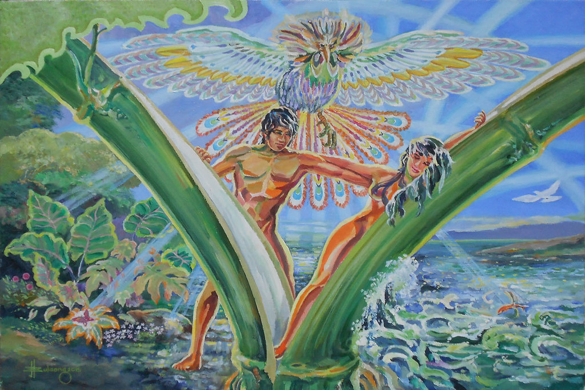
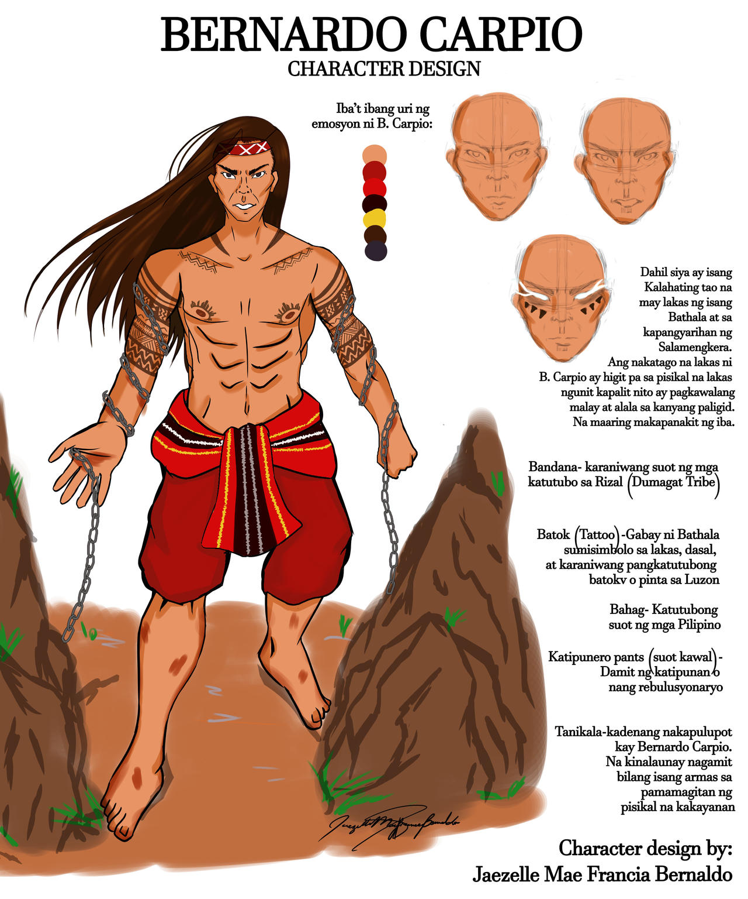
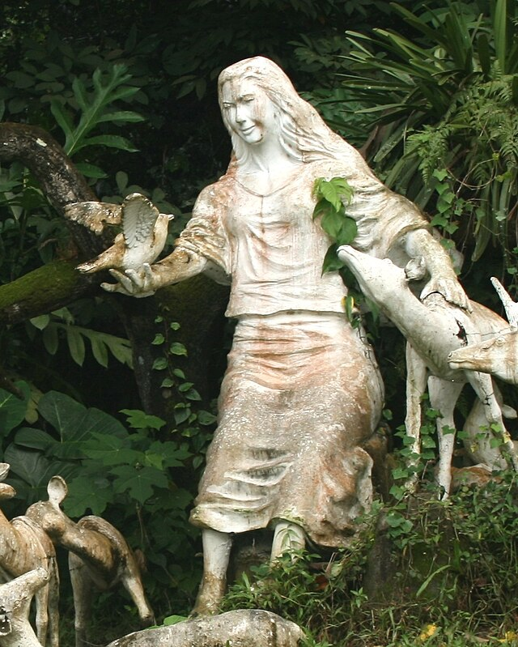

The Legend of Malakas and Maganda

The story of Malakas (Strong) and Maganda (Beautiful) is a creation myth that explains the origin of the Filipino people. According to the legend, the first man and woman emerged from a bamboo stalk split open by the mystical bird, Ibong Amihan.
The Tale of Bernardo Carpio

Bernardo Carpio is a legendary figure known for his immense strength, believed to have been trapped between two great rocks in the mountains of Montalban (now Rodriguez, Rizal). His tale symbolizes the struggle for freedom and the resilience of the Filipino spirit.
The Legend of Maria Makiling

Maria Makiling is a diwata (fairy) and guardian of Mount Makiling in Laguna. Known for her unparalleled beauty and kindness, Maria Makiling is believed to watch over the mountain and its inhabitants. Tales of her mysterious appearances and magical powers continue to enchant and inspire.